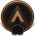
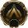
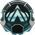
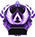

Las Clasificatorias de Battle Royale son un modo competitivo de Apex Legends en el que podrás jugar con otros jugadores con un nivel de habilidad similar al tuyo.
Con el tiempo, podrás subir de rango y jugar en niveles más altos. Durante las temporadas de los Rangos de clasificación también puedes obtener recompensas en función del rango.
| Icono | Nivel de Clasificatorias | Precio | PC Necesarios |
|  | Bronce | 0 PC | 0 PC |
| Plata | 12 PC | 1200 PC | |
|  | Oro | 24 PC | 2800 PC |
|  | Platino | 36 PC | 4800 PC |
| Diamante | 48 PC | 7200 PC | |
|  | Maestro | 60 PC | 10000 PC |
| Depredador Supremo | 60 PC | Top 500 según plataforma |
Por pocisión en partida
La puntuación para el multiplicador de eliminaciones y asistencias combinadas está limitada a 5 por partida. Todos sabemos lo que cuenta como una eliminación. La asistencia, sin embargo, se cuenta como infligir daños a un jugador en el plazo de 5 segundos antes de que caiga derribado. Si se reanima al jugador, el crédito de asistencias se elimina.